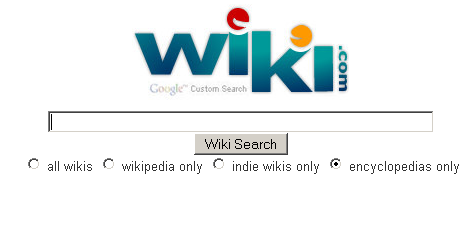

Wiki.com

Nos ofrece una herramienta sencilla y con editor wysiwyg
con el que podremos generar páginas y sub-páginas las cuales
podremos añadir imágenes y archivos, ideal para redactar todo
tipo de información con sus correspondientes galerías de
imágenes, para lo que nos ofrece 100 MB de espacio en total.
Pero no sólo serás tu quien edites, ya que podrás invitar a
otros usuarios a participar en tu documento, siendo tu el
administrador del mismo.